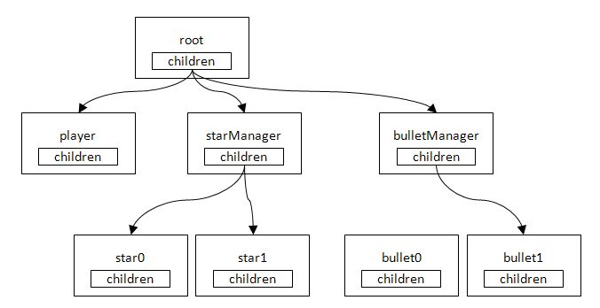
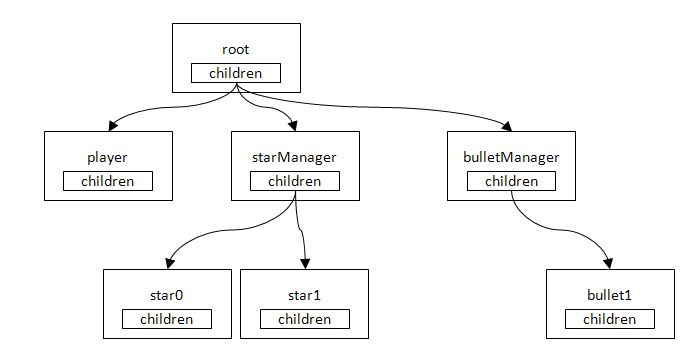

This chapter provides an explanation regarding how to free a no-longer-required instance with garbage collection.
Contents
The previous chapter exemplified how to implement bullets that can be fired from the user plane. However, bullets that have left the screen will lead to increased memory consumption if they are left as they are with more bullets continuing to fire.
In order to save memory consumption, instances of bullets that are no longer required must be freed.
In C++, memory allocated by new can be freed by calling delete. On the other hand, there is no such explicit freeing in C#. Rather, reference to the applicable instance must be disabled from any location in the program and the instance must be freed for garbage collection.
Freeing an instance in C# is exemplified below.
After a bullet is fired, the actor tree will be as follows.

Actor Tree upon Bullet Firing
Assume the objective is to free bullet0, which has moved out of the screen. In this case, the location must be deleted where the children - in the parent's bulletManager - is referencing bullet0.
Deleting Reference to bullet0
Deleting reference within children will leave bullet0 unreferenced from anywhere. In this state, start garbage collection; memory of bullet0 will be collected and that memory area will become usable again.
Freeing an Instance by Starting Garbage Collection
Implement a mechanism for freeing no-longer-required instances to the actor system.
First, prepare a list-format variable for representing actor states.
sample/Tutorial/TutoLib/Actor.cs
public enum ActorStatus { Action, UpdateOnly, RenderOnly, Rest, NoUse, Dead, } public ActorStatus Status;If active, enter ActorStatus.Action; if no longer required, enter ActorStatus.Dead, to Status of ActorStatus.
Next, implement a method to delete an actor with an ActorStatus.Dead status from List<Actor> children.
sample/Tutorial/TutoLib/Actor.cs
virtual public void CheckStatus() { if (this.status != this.StatusNextFrame) this.status = this.StatusNextFrame; if( this.Status == ActorStatus.Dead) { foreach(Actor actorChild in children) { actorChild.Status = ActorStatus.Dead; } } foreach(Actor actorChild in children) { actorChild.CheckStatus(); } children.RemoveAll(CheckDeadActor); } static bool CheckDeadActor(Actor actor) { //@j この条件で真になる要素を削除。 //@e Delete the elements to be proper with this condition. return actor.Status == ActorStatus.Dead; }RemoveAll() is a method to delete all elements from the list. In the above example, a conditional evaluation is made by the CheckDeadActor() method passed as an argument. If true, the element will be deleted from the list.
Next, call CheckStatus() from within Update() of GameFrameworkSample.cs.
sample/Tutorial/Sample06_01/GameFrameworkSample.cs
public override void Update() { base.Update(); ... Root.Update(); Root.CheckStatus();//<--here ... }With this, CheckStatus() will go through the actor tree per frame and delete all actors with a dead flag set to them.
Observe the Bullet class.
sample/Tutorial/Sample06_01/Bullet.cs
public class Bullet : GameActor { static int idNum=0; float speed=8; public Bullet(GameFrameworkSample gs, string name, Texture2D textrue, Vector3 position) : base (gs, name) { Name = name + idNum.ToString(); this.sprite = new SimpleSprite( gs.Graphics, textrue); this.sprite.Center.X = 0.5f; this.sprite.Center.Y = 0.5f; idNum++; this.sprite.Position = position; } public override void Update() { sprite.Position.Y -= speed; if (sprite.Position.Y < 0 )//<--here { this.Status = Actor.ActorStatus.Dead; //<--here } base.Update(); } }Focus on the <- here section. Coordinates are updated for each frame, and a dead flag is set to Status when the actor moves out of the screen (when sprite.Position.Y < 0 is true). This setting will ensure that CheckStatus() will automatically delete these actors.
When garbage collection occurs during game play, processing time is split in order to recover memory, and processing delays may occur.
A function called System.GC.Collect() is available for C#. It is possible to forcefully call garbage collection by calling this function.
If System.GC.Collect() is called between stages, garbage collection occurrences during game play will be reduced.
Implementation of System.GC.Collect() is in the next chapter.
In the current state, the procedure until where the instance is deleted from the list can be checked; however, whether garbage collection is freeing the instance as desired, cannot be checked. The following is a method for checking the freeing of an instance.
By implementing a destructor to a class, that destructor will be called when garbage collection frees an instance. If a destructor is implemented to an actor, with the check processing, it will be possible to check the freeing of actor instances.
sample/Tutorial/TutoLib/Actor.cs
#if DEBUG /// <summary> /// デストラクタ。 /// </summary> ~Actor() { Console.WriteLine("~"+Name); } #endifBy writing processing as above, "- bullet0" will be displayed on the output window when an instance is freed by garbage collection.
If the text is not displayed even when garbage collection has been carried out, it is possible that the instance is still being referenced from somewhere - review the source code.
Since this processing is for checking, make sure to comment out once a check is made.
Note: In this sample, the freeing of an instance is exemplified by the repetition of generating and freeing an instance. When considering processing time, however, it is more efficient to keep a no-longer-required instance and to re-initialize the value when needed rather than to repeat the process of generating and freeing an instance.
Resources other than managed memory (memory allocated with "new" in C#) are called "unmanaged resources" in C#.
Classes that allocate unmanaged resources and are often used in PSM applications are as follows:
- Texture2D
- Sound, SoundPlayer
- Bgm, BgmPlayer
- Image
Unlike managed memory, in principle unmanaged resources will not be recovered by garbage collection even if a reference is removed from a program. Therefore, when these classes use unmanaged resources, the resources must be explicitly released.
These classes inherit the IDisposable interface and implement the Dispose method in order to release resources.
Classes the inherit the IDisposable interface call the Dispose method when resources are no longer needed to release them.
sample/Tutorial/Sample06_01/GameFrameworkSample.cs
public override void Terminate() { texturePlayer.Dispose(); textureStar.Dispose(); textureBullet.Dispose(); soundBullet.Dispose(); soundPlayerBullet.Dispose(); bgm.Dispose(); bgmPlayer.Dispose(); base.Terminate(); }In the above example, Dispose() is called upon program termination and the allocated unmanaged resources are released.
In this sample, there is almost no danger of insufficient resources since the use of unmanaged resources is low, but if Dispose() releases are forgotten in a program that frequently creates textures, insufficient resources will easily occur. When resources are used up, the program will abnormally terminate - do not forget to call Dispose().
Note: When the program terminates, unmanaged resources will be automatically released.